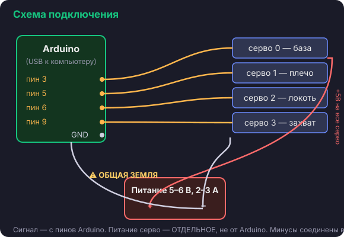

Урок 6 · электроника
Подключение
Цель урока
Подключить 4 сервопривода к Arduino и внешнему питанию — правильно и безопасно.

🔌 Куда что втыкать
- Сигнальные провода серво → пины Arduino: база→3, плечо→5,
локоть→6, захват→9.
- Питание (+) всех серво → плюс внешнего блока 5–6 В.
- Земля (−) всех серво и GND Arduino → минус блока питания. Это
общая земля — без неё ничего не заработает.
⚠️ Два главных правила
1. Сервоприводы не питаем от Arduino/USB — только внешний блок 5–6 В, 2–3 А.
2. Минусы блока питания и Arduino обязательно соединяем вместе (общая земля).
💡 Плата из набора
В наборе MeArm есть небольшая плата-PCB с разъёмами — она помогает аккуратно развести
провода серво и питание. Можно использовать её вместо макетки. Главное правило про
«отдельное питание + общая земля» остаётся.
🚀 Продвинуто: драйвер PCA9685
Если взяли драйвер PCA9685 — серво подключаются к нему, а он к Arduino по двум проводам
(I2C: SDA/SCL). Это чище по питанию и сигналу. Для старта хватает и прямого подключения
к пинам.
✅ Первая проверка
Залей на Arduino скетч «центрировать все» — все 4 серво встанут в 90°. Если так и
случилось (и Arduino не перезагружается) — питание и земля в порядке.